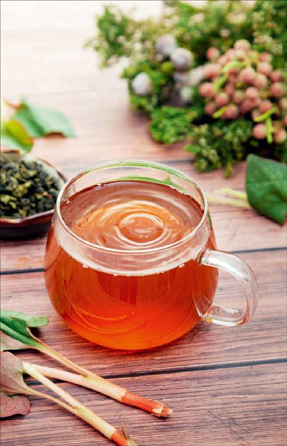
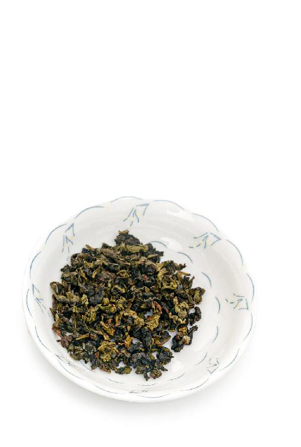
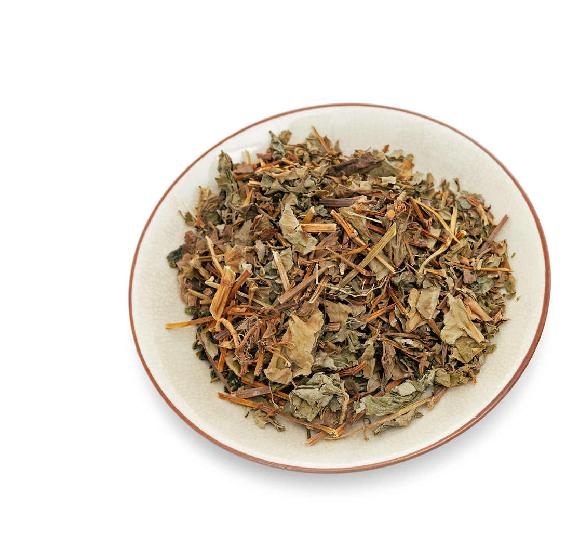
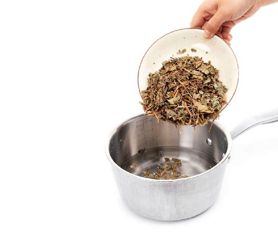
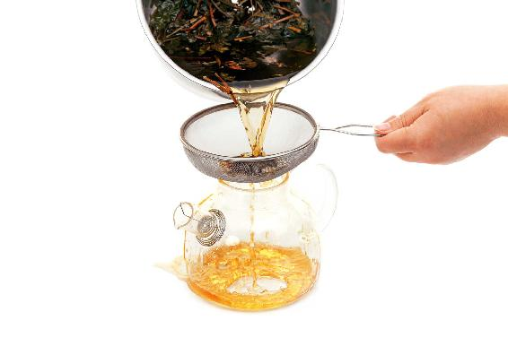
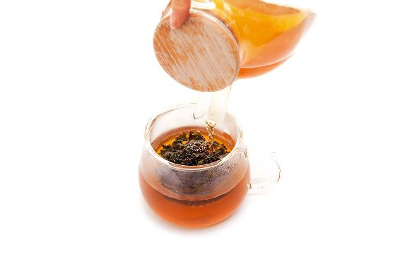

很多人认为，节气是一天的概念，其实不是，一个节气是管十五天的。也就是说，节气养生并不是在交节气的那一天才养生，而是在整个节气所管的这十五天之内，您都可以吃适合这个节气的饮食。
为什么我们总说某月某日交某节气，而且还精确到几点几分几秒？这里有一个黄道和黄道经度的概念。地球围绕太阳公转一周是一年，但从地球上看，是太阳在天空中移动了一周，这样的一周，我们把它叫作黄道。如果把这一周360度等分成24份，这就是黄道的经度，24份上的每一个点，就是通常所说的二十四节气。
我们把春分这个点定为黄道经度的零度，每隔15度，太阳运行到下一个位置的时候，就是下一个节气，这就是一年二十四节气的来历。
为什么要跟着节气来养生？因为中国的农历是阴阳合历，非常地巧妙，里面阳历的部分，就是指太阳运行的位置。以太阳每运行15度为一个节气，定下了二十四个节气。而且在我国的秦汉时期，二十四个节气就已经被全部观测到了，同时，还把它们的顺序和名称也固定了下来。
北京有一处著名的古迹叫古观象台，在台顶上就陈列着一台黄道经纬仪，这台仪器制造于清康熙年间，它是用来测量黄道的经度、纬度和二十四节气的。如果您到北京旅游，不妨去看一看。我特别建议带小孩子看一看，让他们多了解一些古代的天文学知识。
节气，其实节和气是不一样的，什么是节，什么是气呢？
在每个月月初的那一个节气，我们叫作节，比如，11月月初是立冬，这是一个节。而每个月下旬的那一个节气，我们称之为气，也叫中气，比如，11月下旬的小雪，这就是一个中气。
现在年轻人熟悉的星座，也是以太阳在黄道上运行的位置来划分的，太阳在黄道上每移动30度，就是一个星座，这样一圈下来，正好是十二个星座，也被称之为黄道十二宫。黄道十二宫，也是以太阳运行到黄道经度的零度，也就是交春分这一个时刻为起点的，这个月是白羊星座。
二十四节气的十二个中气，都在每个月的下旬，它们的间隔时间跟现代占星学的太阳星座的十二个月占用的时间周期是完全吻合的。
黄道十二宫是以中气来划分的，但在二十四节气中，每个月月初的这个节，是要大于每个月下旬的这个中气的。
每一个节气分为三候，每一候有五天。立春有三候：一候东风解冻；二候蛰虫始振；三候鱼陟负冰。这三候对应的物候现象是风、土和水。
立春第一候的这五天，风吹在身上，跟冬天已经不一样了。虽然气温没多大变化，但是风不那么凛冽了，有一种温润的感觉。风对我们身体的伤害，也从对下半身的伤害为主，转移到对头部的伤害为主了。
冬天，很多老年人受了风寒，感觉腰、腿痛。到了初春，如果再受风寒，他们可能就会感觉到头晕、血压升高，甚至会诱发脑卒中；对年轻人来说，春天的风会让他们患上感冒、咳嗽、眼睛发红或者是鼻炎等，这些都是风伤害我们头部的表现。
有些家长，立春后出门就不给孩子戴帽子了，以为春天到了，天气暖和了，阳光照在身上还不错。我总是忍不住要提醒这些家长，一定要给孩子戴帽子。因为天气虽然开始暖和了，但春风还是会伤人的。尤其对7岁以下的小朋友来说，头部是最薄弱的地方，非常容易受风，所以在春天出门，我们一定要给孩子戴一顶薄薄的棉质帽子，不能太厚，不然孩子一活动，头部一出汗反而容易着凉，容易感冒、咳嗽。
立春节气第二候的物候是蛰虫始振，也就是说在土里、洞里的昆虫慢慢苏醒了，虽然还没完全醒来，但它们已经蠢蠢欲动了。
其实，自然界中的虫不仅包括我们肉眼看到的，还包括肉眼看不到的，如细菌和病毒。这些自然环境中存在的细菌和病毒也在慢慢地复苏。我们不要等到三四月份天气暖和、病毒非常活跃的时候再来预防，那就有点晚了。
立春后，我们马上就要预防病毒。怎么来预防呢？
重点是清除体内的陈寒和浊气。
《黄帝内经》说：“冬伤于寒，春必咳嗽。”如果您在冬天受了寒，而且没有及时地发散出去，积存到了春天，就容易咳嗽、感冒、发热。
初春的时候，冬天刚过去，我们体内的寒气还没有变得很顽固，吃一些辛味的蔬菜，就能把它发散出去，能排毒、抗毒，预防春季的流行病。
因此，在正月初七（人日）开始喝的七菜羹，还有立春节气吃的春盘，您都可以继续吃下去。
立春节气的第三候是鱼陟负冰。立春的鱼跟其他节气有什么不同呢？立春节气，北方一些地区河水解冻了，鱼儿纷纷游到水面上来。水面如果有残冰，看起来就好像是鱼在背着冰游动一样，这叫作鱼陟负冰。
这种景象我没有见过，我想古人应该是经常看到的。在北京，这个时节水面还是一片冰封，表面看起来跟冬天差不多。但是白天阳光好的时候，您仔细聆听，会听到湖面时不时地传来一阵响动，这就是冰层裂开的声音。
北方的有些朋友们在立春节气找不到春天的感觉，对饮食换季就没那么积极，其实，如果把身心融入大自然中去慢慢感受，就会听到春天的脚步声。
七菜羹和五辛盘都是吃的羹汤、菜，我给喜欢喝茶的朋友们也配了一个方子，就是在立春节气喝的排浊抗霾茶。
冬天的时候，我们身体内积存了很多浊气。浊气来自两个方面：一是内部的因素；二是外部的因素。

排浊抗霾茶


原料：鱼腥草（干品）15～30克，乌龙茶约6克。

做法：
1. 锅里放鱼腥草，加冷水，大火烧开，1分钟后关火。（因为鱼腥草不适合久煮，否则它消炎、抗毒的成分就减弱了）


2. 把煮好的鱼腥草水滤出来，冲泡乌龙茶。煮过的鱼腥草不要倒掉，可以再煮一次。
允斌叮嘱：
如果您只是平时预防，用15克鱼腥草就可以了。如果早春的时候有霾，那就用30克；乌龙茶就用您平时喝茶的量，大约6克。
内部的因素是我们在冬天吃了很多的大鱼大肉，肥甘厚味，这些东西会积存内热和毒素；外部的因素，是一到冬天就会出现的霾，身体吸入霾，它会积存在体内，到了春天我们就要好好地排出去，避免它留在我们的身体内作怪。
霾属于浊气的一种，而且属于阴浊之气，它特别容易伤害人体的清阳之气。
如果冬季霾天比较多的话，我们身体的阳气到了初春就不容易生发起来。如果您居住在冬季有霾的城市，那么在立春节气，您可以喝排浊抗霾茶，让身体更好地排毒，清除浊气，生发阳气。
您可以在冲泡乌龙茶之前先用开水洗一遍茶，然后用煮开的鱼腥草水冲泡乌龙茶。您可以多冲泡几次。煮过的鱼腥草可以加水再煮一次，冲泡乌龙茶。
很多朋友对鱼腥草的味道有一点抵触，如果您去药店买鱼腥草的干品就会发现，其实它是没什么味道的，最多有一点淡淡的茶味。如果是好的野生鱼腥草的干品，甚至会有一种花香味。用它泡水或煮来喝，有喝茶水的感觉。喜欢饮茶的人，再配上乌龙茶，喝起来会更香。
当然，排浊抗霾茶里配乌龙茶，不仅是为了让茶味更好，乌龙茶在其中也起到了消炎、解毒的作用。
这道茶是给爱茶人的一个方子。平时不喝茶的人，直接喝鱼腥草茶排浊抗霾就可以。脾胃虚弱的人，可以配一个陈皮。
读者评论：喝了几天排浊抗霾茶，一身轻松
volvo_go：按陈老师的方法喝了几天排浊抗霾茶确实有效果，一身轻松。
合欢花_3i：在电视上看到陈老师说鱼腥草是万能消炎药，我就去市场买来试试。果然只喝了一次，我的咽炎就好了。
常行_vp：每年秋冬季的雾霾让人恐惧！有幸了解到老师的排浊抗霾茶，立刻行动起来，一天不落地喝！几天下来，人真的精神了好多，身心都健康起来啦！
早春的时候，天气还比较寒凉，这时候还不太适合喝绿茶，因此要用乌龙茶这种半发酵的茶。它既可以健脾、益胃，又可以排毒，是比较合适的。
冬天的时候，养生重点偏向于食，特别是吃一些补益的食物和汤品。到了春天，我给大家介绍的更多偏向于饮，因为春天是一个喝茶的好季节，通过饮可以更好地清除身体内的毒素。